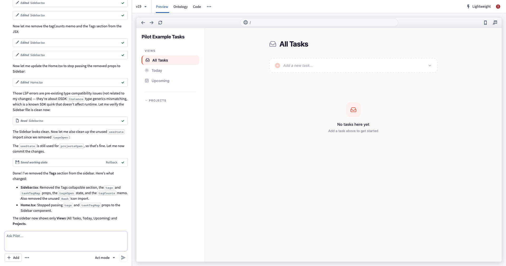

Pilot
:::callout{theme="neutral" title="Beta"}
Pilot is in the beta phase of development and may not be available on your enrollment. Functionality may change during active development. To enable Pilot, contact your platform administrator to modify application access in Control Panel.
:::
Pilot is an AI-powered application builder in Foundry that creates frontends from natural language prompts. You can describe what you want to build, and Pilot automatically generates the ontology entities, design specification, frontend code, and seed data. Pilot builds two kinds of frontends, both using the OSDK and React:
- Applications: Standalone, production-grade applications deployed through Developer Console and hosted at a subdomain.
- Custom widgets: Sandboxed custom widgets that publish to the Widget Registry and embed inside a Workshop application.
Key capabilities
Pilot manages the full application lifecycle with specialized AI agents that can perform the following operations:
- Ontology generation: Pilot analyzes your prompt and creates the object types, action types, link types, properties, and relationships that your application needs.
- Design specification: A design agent produces the design specification covering color palette, typography, layout, and interaction patterns.
- Frontend generation: An application building agent implements a React application using OSDK hooks, with a live preview inside the Pilot workspace.
- Seed data generation: Pilot generates sample data in an isolated container, so AI agents never access real enterprise data during the build process.
- Guided deployment: A step-by-step deployment panel walks you through ontology promotion, Developer Console configuration, CI checks, and release â or, for a custom widget, publishing to the Widget Registry.
- Multiple AI models: Choose from Claude, GPT, or Gemini model families depending on your enrollment configuration.
- Context attachments: Provide existing ontology entities, documents, or images to guide how Pilot builds your application.
How Pilot works
Pilot follows an end-to-end workflow from prompt to production.
- Prompt-driven build: Describe the application you want to build. Using your description, Pilot creates an isolated container and generates the necessary ontology, design, code, and seed data required to build your application.
- Ontology alignment: Pilot generates or reuses object types and actions. Those ontology entities are promoted to the main ontology through Global Branching and proposals.
- Developer Console configuration: Pilot creates a Developer Console application tied to your project, requests a subdomain, and sets application restrictions to include the required ontology entities.
- CI and deployment: Pilot generates deployment files and CI configuration. CI checks run and must pass before you can tag and release a version.
- Hosted production application: The application is served at the registered subdomain. Users authorize through OAuth and can immediately use the application with real data.
The steps above describe building and deploying an application. When you build a custom widget, the build process is the same. Deployment, however, publishes a versioned widget set to the Widget Registry and embeds it in a Workshop application instead of hosting it at a subdomain. See Build a custom widget and Deploy a custom widget.

Prerequisites
Ensure that you meet the criteria below to use Pilot:
- You are on a Foundry enrollment with Pilot enabled.
- You have existing ontology entities or a project with ontology write permissions.
- You have the
Editor role or higher on the project, enabling deployment.
Next steps